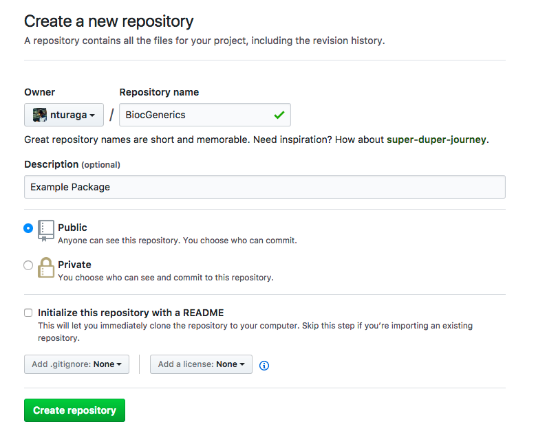
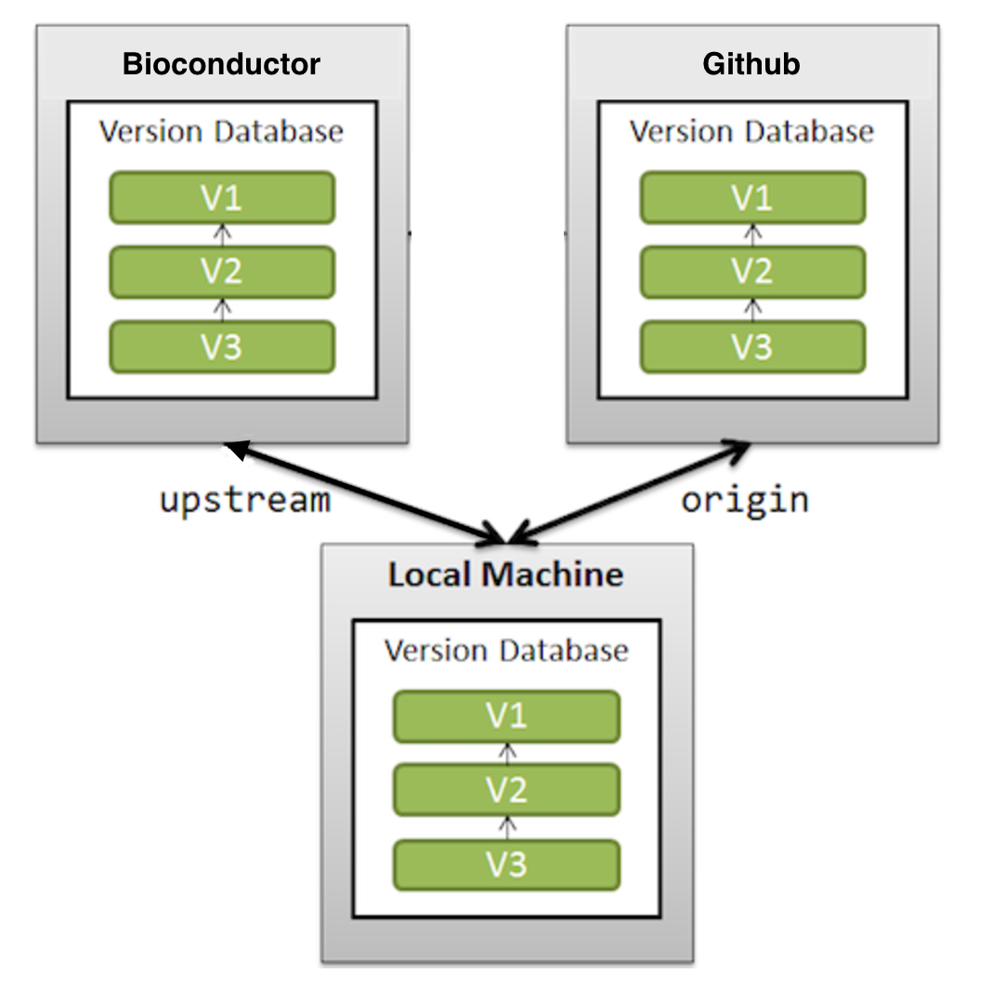

28 Git Version Control
The Bioconductor project is maintained in a Git source control system. Package maintainers update their packages by pushing changes to their git repositories.
This chapter contains several sections that will cover typical scenarios encountered when adding and maintaining a Bioconductor package.
28.1 Essential work flow
A minimal workflow is to checkout, update, commit, and push changes to
your repository. Using BiocGenerics as an example:
git clone git@git.bioconductor.org:packages/BiocGenerics
cd BiocGenerics
## add a file, e.g., `touch README`
## edit file, e.g., `vi DESCRIPTION`
BiocGenerics$ git commit README DESCRIPTION
BiocGenerics$ git pushThis requires that Bioconductor knows the SSH keys you use to establish your identity.
Two useful commands are
BiocGenerics$ git diff # review changes prior to commit
BiocGenerics$ git log # review recent commitsIf the repository is already cloned, the work flow is to make sure that you are on the ‘master’ branch, pull any changes, then introduce your edits.
BiocGenerics$ git checkout master
BiocGenerics$ git pull
## add, edit, commit, and push as above28.2 Where to Commit Changes
New features and bug fixes are introduced on the master (‘devel’) branch of the GIT repository.
BiocGenerics$ git checkout master
BiocGenerics$ git pull
## edit 'R/foo.R' and commit on master
BiocGenerics$ git commit R/foo.R #
[master c955179] your commit message
1 file changed, 10 insertions(+), 3 deletions(-)
BiocGenerics$ git pushTo make more extensive changes see Fix bugs in devel and release.
Bug fixes can be ported to the current release branch. Use
cherry-pick to identify the commmit(s) you would like to port. E.g.,
for release 3.6, porting the most recent commit to master
BiocGenerics$ git checkout RELEASE_3_6
BiocGenerics$ git cherry-pick master
BiocGenerics$ git push28.3 Checks and version bumps
Each commit pushed to the Bioconductor repository should build and check without errors or warnings
BiocGenerics$ cd ..
R CMD build BiocGenerics
R CMD check BiocGenerics_1.22.3.tar.gzEach commit, in either release or devel, should include a bump in the
z portion of the x.y.z package versioning scheme.
Builds occur once per day, and take approximately 24 hours. See the build report for git commits captured in the most recent build (upper left corner)
28.4 Annotation packages
Traditional Annotation packages are not stored in GIT due to the size of annotation files. To update an existing Annotation package please send an email to maintainer@bioconductor.org. A member of the Bioconductor team will be in contact to receive the updated package.
Newer annotation packages can be stored in GIT as it is a requirement to use the AnnotationHub or similar server hosted data. The larger sized files are not included directly in the package. To contribute a new Annotation package please contact hubs@bioconductor.org for guidance and read the documentation on How to Create A Hub package.
Currently direct updates to annotation packages, even those stored on git, are not supported. If you wish to updated an annotation package, make required changes and push to git.bioconductor.org. Then send an email to hubs@bioconductor.org or maintainer@bioconductor.org requesting the package be propagated.
28.5 Subversion to Git Transition
The essential steps for transitioning from SVN to git are summarized in
- New package workflow: update your GitHub repository after package acceptance.
- Create a new GitHub repository for an existing package.
- Maintain a Bioconductor-only repository for an existing package.
28.5.1 New package workflow
Goal: You developed a package in GitHub, following the Bioconductor new package Contributions README guidelines, submitted it to Bioconductor, and your package has been moderated. As part of moderation process, the package to be reviewed has been added as a repository on the Bioconductor git server.
During and after the review process, package authors must push changes that include a version number ‘bump’ to the Bioconductor git repository. This causes the package to be built and checked on Linux, macOS, and Windows operating systems, and forms the basis for the review process.
In this document, package authors will learn best practices for pushing to the Bioconductor git repository.
-
SSH keys. As part of the initial moderation step, Bioconductor will use SSH ‘public key’ keys available in
https://github.com/<your-github-id>.keys.After the review process is over, additional SSH keys can be added and contact information edited using the BiocCredentials application.
-
Configure the “remotes” of your local git repository. You will need to push any future changes to your package to the Bioconductor git repository to issue a new build of your package.
Add a remote named
upstreamto your package’s local git repository using:git remote add upstream git@git.bioconductor.org:packages/<YOUR-REPOSITORY-NAME>.gitCheck that you have updated the remotes in your repository; you’ll see an
originremote pointing togithub.com, and anupstreamremote pointing tobioconductor.org$ git remote -v origin <link to your github> (fetch) origin <link to your github> (push) upstream git@git.bioconductor.org:packages/<YOUR-REPOSITORY-NAME>.git (fetch) upstream git@git.bioconductor.org:packages/<YOUR-REPOSITORY-NAME>.git (push)NOTE: As a package developer, you must use the SSH protocol (as in the above command) to gain read/write access to your package in the Bioconductor git repository.
-
Add and commit changes to your local repository. During the review process you will likely need to update your package. Do this in your local repository by first making sure your repository is up-to-date with your
github.comandgit.bioconductor.orgrepositories.git fetch --all ## merge changes from Bioc (upstream remote at git@git.bioconductor.org) git merge upstream/master ## merge changes from GitHub (origin remote) git merge origin/masterNote. If your GitHub default branch is
main, replacemasterwithmain:## merge changes from GitHub (origin remote) git merge origin/mainMake changes to your package master branch and commit them to your local repository
git add <files changed> git commit -m "<informative commit message>" -
‘Bump’ the package version. Your package version number is in the format ‘major.minor.patch.’ Initial package submissions should have a version number of
0.99.0, as indicated by theVersionfield in theDESCRIPTIONfile. Increment thepatchversion number by 1, e.g., to0.99.1,0.99.2, …,0.99.9,0.99.10, …Bumping the version number before pushing is essential. It ensures that the package is built across platforms.
Remember to add and commit these changes to your local repository.
-
Push changes to the Bioconductor and GitHub repositories. Push the changes in your local repository to the Bioconductor and GitHub repositories.
## push to BioC (upstream remote at git@git.bioconductor.org) git push upstream master ## push to GitHub (origin remote) git push origin masterNote. If your GitHub default branch is
main, replacemasterwithmain:## push to Bioc (upstream remote at git@git.bioconductor.org) git push upstream main:master ## push to GitHub (origin remote) git push origin main -
Check the updated build report. If your push to git.bioconductor.org included a version bump, you’ll receive an email directing you to visit your issue on github.com,
https://github.com/Bioconductor/Contributions/issues/; a comment is also posted on the issue indicating that a build has started.After several minutes a second email and comment will indicate that the build has completed, and that the build report is available. The comment includes a link to the build report. Follow the link to see whether further changes are necessary.
-
See other scenarios for working with Bioconductor and GitHub repositories, in particular:
28.5.2 Create a new GitHub repository for an existing Bioconductor package
Goal: As a maintainer, you’d like to create a new GitHub repository for your existing Bioconductor repository, so that your user community can engage in the development of your package.
Create a new GitHub account if you don’t have one.
Set up remote access to GitHub via SSH or Https. Please check which-remote-url-should-i-use and add your public key to your GitHub account.
Once you have submitted your keys, you can login to the BiocCredentials application to check if the correct keys are on file with Bioconductor.
-
Create a new GitHub repo on your account, with the name of the existing Bioconductor package.
We use “BiocGenerics” as an example for this scenario.
After pressing the ‘Create repository’ button, ignore the instructions that GitHub provides, and follow the rest of this document.
-
On your local machine, clone the empty repository from GitHub.
Use
httpsURL (replace<developer>with your GitHub username)git clone https://github.com/<developer>/BiocGenerics.gitor
SSHURLgit clone git@github.com:<developer>/BiocGenerics.git -
Add a remote to your cloned repository.
Change the current working directory to your local repository cloned in the previous step.
cd BiocGenerics git remote add upstream git@git.bioconductor.org:packages/BiocGenerics.git -
Fetch content from remote upstream,
git fetch upstream -
Merge upstream with origin’s master branch,
git merge upstream/masterNOTE: If you have the error
fatal: refusing to merge unrelated histories, then the repository cloned in step 4 was not empty. Either clone an empty repository, or see Sync existing repositories. -
Push changes to your origin master,
git push origin masterNOTE: Run the command
git config --global push.default matchingto always push local branches to the remote branch of the same name, allowing use ofgit push originrather thangit push origin master. -
(Optional) Add a branch to GitHub,
## Fetch all updates git fetch upstream ## Checkout new branch RELEASE_3_6, from upstream/RELEASE_3_6 git checkout -b RELEASE_3_6 upstream/RELEASE_3_6 ## Push updates to remote origin's new branch RELEASE_3_6 git push -u origin RELEASE_3_6 Check your GitHub repository to confirm that the
master(and optionallyRELEASE_3_6) branches are present.Once the GitHub repository is established follow Push to GitHub and Bioconductor to maintain your repository on both GitHub and Bioconductor.
28.5.3 Maintain a Bioconductor-only repository for an existing package
Goal: Developer wishes to maintain their Bioconductor repository without using GitHub.
28.5.3.1 Clone and setup the package on your local machine.
Make sure that you have
SSHaccess to the Bioconductor repository; be sure to submit your SSH public key or github id to Bioconductor.-
Clone the package to your local machine,
git clone git@git.bioconductor.org:packages/<ExamplePackage>NOTE: If you clone with
httpsyou will NOT get read+write access. -
View existing remotes
git remote -vwhich will display
origin git@git.bioconductor.org:packages/<ExamplePackage>.git (fetch) origin git@git.bioconductor.org:packages/<ExamplePackage>.git (push)This indicates that your git repository has only one remote
origin, which is the Bioconductor repository. -
In other work flows, the
originremote has been renamed toupstream. It may be convenient to make this change to your own repositorygit remote rename origin upstreamand confirm that
git remote -vnow associates theupstreamrepository name withgit@git.bioconductor.org.
28.5.3.2 Commit changes to your local repository
-
Before making changes to your repository, make sure to
pullchanges or updates from the Bioconductor repository. This is needed to avoid conflicts.git pull -
Make the required changes, then
addandcommityour changes to yourmasterbranch.git add <files changed> git commit -m "My informative commit message" -
(Alternative) If the changes are non-trivial, create a new branch where you can easily abandon any false starts. Merge the final version onto
mastergit checkout -b feature-my-feature ## add and commit to this branch. When the change is complete... git checkout master git merge feature-my-feature
28.5.3.3 Push your local commits to the Bioconductor repository
-
Push your commits to the Bioconductor repository to make them available to the user community.
Push changes to the
masterbranch using:git checkout master git push upstream master
28.5.3.4 (Optional) Merge changes to the current release branch
-
If the changes (bug fixes) need to be available on the
<RELEASE_X_Y>branch. Checkout the branch<RELEASE_X_Y>using:git checkout -b <RELEASE_X_Y> upstream/<RELEASE_X_Y> -
Pull any changes from the Bioconductor repository to this branch
git pull -
Then, merge
masterinto the<RELEASE_X_Y>branchgit merge master
A new commit message will show up after this step, with the
message Merge branch 'master' into <RELEASE_X_Y>. It will be
committed to <RELEASE_X_Y> branch when you save. Update the
version number so that it is correct for the release, and commit
the modified DESCRIPTION file
git add DESCRIPTION
git commit -m "Update version bump"-
Push changes to the
<RELEASE_X_Y>branch using:git push upstream <RELEASE_X_Y>
28.6 More scenarios for repository creation
- Sync an existing GitHub repository with Bioconductor.
- Create a local repository for private use.
28.6.1 Sync an existing GitHub repository with Bioconductor
Goal: Ensure that your local, Bioconductor, and GitHub repositories are all in sync.
Clone the GitHub repository to a local machine. Change into the directory containing the repository.
-
Configure the “remotes” of the GitHub clone.
git remote add upstream git@git.bioconductor.org:packages/<YOUR-REPOSITORY>.git -
Fetch updates from all (Bioconductor and GitHub) remotes. You may see “warning: no common commits”; this will be addressed after resolving conflicts, below.
git fetch --all -
Make sure you are on the master branch.
git checkout master -
Merge updates from the GitHub (
origin) remotegit merge origin/master -
Merge updates from the Bioconductor (
upstream) remotegit merge upstream/masterUsers of git version >= 2.9 will see an error message (“fatal: refusing to merge unrelated histories”) and need to use
git merge --allow-unrelated-histories upstream/master Resolve merge conflicts if necessary.
After resolving conflicts and committing changes, look for duplicate commits (e.g.,
git log --oneline | wcreturns twice as many commits as in SVN) and consider following the steps to force Bioconductormasterto GitHubmaster.-
Push to both Bioconductor and GitHub repositories.
git push upstream master git push origin master -
Repeat for the release branch, replacing
masterwith the name of the release branch, e.g.,RELEASE_3_6. It may be necessary to create the release branch in the local repository.git checkout RELEASE_3_6 git merge upstream/RELEASE_3_6 git merge origin/RELEASE_3_6 git push upstream RELEASE_3_6 git push origin RELEASE_3_6NOTE: If you are syncing your release branch for the first time, you have to make a local copy of the
RELEASE_X_Ybranch, bygit checkout -b <RELEASE_X_Y> upstream/<RELEASE_X_Y>Following this one time local checkout, you may switch between
RELEASE_X_Yandmasterwithgit checkout <RELEASE_X_Y>. If you do not use the command to get a local copy of the release branch, you will get the message,(HEAD detached from origin/RELEASE_X_Y)Remember that only
masterand the current release branch of Bioconductor repositories can be updated.
28.6.2 Create a local repository for private use
Goal: A user (not the package developer) would like to modify functions in a package to meet their needs. There is no GitHub repository for the package.
-
Clone the package from the Bioconductor repository. As an end user, you do not have write access to the repository, so use the https protocol
git clone https://git@git.bioconductor.org/packages/<ExamplePackage> -
Make changes to your local repository. Commit the changes to your local repository. A best practice might modify the changes in a new branch
git checkout -b feature-my-feature ## modify git commit -a -m "feature: a new feature"and then merge the feature onto the branch corresponding to the release in use, e.g.,
git checkout <RELEASE_X_Y> git merge feature-my-feature -
Rebuild (to create the vignette and help pages) and reinstall the package in your local machine by running in the parent directory of ExamplePackage
R CMD build ExamplePackage R CMD INSTALL ExamplePackage_<version.number>.tar.gz The package with the changes should be available in your local R installation.
28.7 Scenarios for code update:
- Pull upstream changes, e.g., introduced by the core team.
- Push to GitHub and Bioconductor repositories.
- Resolve merge conflicts.
- Abandon changes.
- Fix bugs in devel and release.
28.7.1 Pull upstream changes
Goal: Your Bioconductor repository has been updated by the core team. You want to fetch these commits from Bioconductor, merge them into your local repository, and push them to GitHub.
NOTE: It is always a good idea to fetch updates from Bioconductor before making more changes. This will help prevent merge conflicts.
These steps update the master branch.
-
Make sure you are on the appropriate branch.
git checkout master -
Fetch content from Bioconductor
git fetch upstream -
Merge upstream with the appropriate local branch
git merge upstream/masterGet help on Resolve merge conflicts if these occur.
-
If you also maintain a GitHub repository, push changes to GitHub’s (
origin)masterbranchgit push origin master
To pull updates to the current RELEASE_X_Y branch, replace master
with RELEASE_X_Y in the lines above.
See instructions to Sync existing repositories with changes to both the Bioconductor and GitHub repositories.
28.7.2 Push to GitHub and Bioconductor repositories
Goal: During everyday development, you commit changes to your
local repository master branch, and wish to push these commits to
both GitHub and Bioconductor repositories.
NOTE: See Pull upstream changes for best practices before committing local changes.
We assume you already have a GitHub repository with the right setup to push to Bioconductor’s git server (git@git.bioconductor.org). If not please see FAQ’s on how to get access and follow instructions to maintain GitHub and Bioconductor repositories. We use a clone of the
BiocGenericspackage in the following example.-
To check that remotes are set up properly, run the command inside your local machine’s clone.
git remote -vwhich should produce the result (where <developer> is your GitHub username):
origin git@github.com:<developer>/BiocGenerics.git (fetch) origin git@github.com:<developer>/BiocGenerics.git (push) upstream git@git.bioconductor.org:packages/BiocGenerics.git (fetch) upstream git@git.bioconductor.org:packages/BiocGenerics.git (push) -
Make and commit changes to the
masterbranchgit checkout master ## edit files, etc. git add <name of file changed> git commit -m "My informative commit message describing the change" -
(Alternative) When changes are more elaborate, best practice is to use a local branch for development.
git checkout master git checkout -b feature-my-feature ## multiple rounds of edit, add, commitMerge the local branch to master when the feature is ‘complete.’
git checkout master # Pull upstream changes before merging # http://bioconductor.org/developers/how-to/git/pull-upstream-changes/ git merge feature-my-feature -
Push updates to GitHub’s (
origin)masterbranchgit push origin master -
Next, push updates to Bioconductor’s (
upstream)masterbranchgit push upstream master Confirm changes, e.g., by visiting the GitHub web page for the repository.
28.7.3 Resolve merge conflicts
Goal: Resolve merge conflicts in branch and push to GitHub and Bioconductor repositories.
-
You will know you have a merge conflict when you see something like this:
git merge upstream/master Auto-merging DESCRIPTION CONFLICT (content): Merge conflict in DESCRIPTION Automatic merge failed; fix conflicts and then commit the resultThis merge conflict occurs when the package developer makes a change, and also a collaborator or a Bioconductor core team member makes a change to the same file (in this case the
DESCRIPTIONfile).How can you avoid this? pull upstream changes before committing any changes. In other words,
fetchandmergeremote branches before apush. -
If in spite of this you have conflicts, you need to fix them. See which file has the conflict,
git statusThis will show you something like this:
On branch master Your branch is ahead of 'origin/master' by 1 commit. (use "git push" to publish your local commits) You have un-merged paths. (fix conflicts and run "git commit") (use "git merge --abort" to abort the merge) Un-merged paths: (use "git add <file>..." to mark resolution) both modified: DESCRIPTION no changes added to commit (use "git add" and/or "git commit -a") -
Open the file in your favorite editor. Conflicts look like:
<<<<<<< HEAD Version: 0.23.2 ======= Version: 0.23.3 >>>>>>> upstream/masterEverything between
<<<<and=====refers to HEAD, i.e your current change. And everything between=====and>>>>>refers to theremote/branchshown there, i.eupstream/master.You want to keep the most accurate change, by deleting what is necessary. In this case, keep the latest version:
Version: 0.23.3 -
Add and commit the file as you would any other change.
git add DESCRIPTION git commit -m "Fixed conflicts in version change" -
Push to both your GitHub and Bioconductor repositories,
git push origin master git push upstream master
28.7.3.1 Extra Resources
28.7.4 Abandon changes
Goal: You want to start fresh after failing to resolve conflicts or some other issue. If you intend to go nuclear, please contact the bioc-devel@bioconductor.org mailing list.
28.7.4.1 Force Bioconductor master to GitHub master
One way you can ignore your work and make a new branch is by replacing
your local and GitHub repository master branch with the
Bioconductor master branch.
Note: This works only if you haven’t pushed the change causing the issue to the Bioconductor repository.
Note: Any references to commits on current master (e.g., in GitHub issues) will be invalidated.
-
Checkout a new branch, e.g.,
master_backup, with tracking set to track the Bioconductormasterbranchupstream/master.git checkout -b master_backup upstream/master -
Rename the branches you currently have on your local machine. First, rename
mastertomaster_deprecated. Second, renamemaster_backuptomaster. This process is called the classic Switcheroo.git branch -m master master_deprecated git branch -m master_backup master -
You will now have to “force push” the changes to your GitHub (
origin)masterbranch.git push -f origin master -
(Optional) If you have commits on your
master_deprecatedbranch that you would like ported on to your newmasterbranch. Git has a special feature calledcherry-pickTake a look at which commit you want to cherry-pick on to the new master branch, using
git log master_deprecated, copy the correct commit id, and use:git cherry-pick <commit id>Push these cherry-picked changes to GitHub and Bioconductor repositories.
28.7.4.2 Reset to a previous commit
If you find yourself in a place where you want to abandon changes
already committed to Bioconductor or GitHub, use reset to undo
the commits on your local repository and push -f to force the
changes to the remotes. Remember that the HEAD commit id is the most
recent parent commit of the current state of your local
repository.
git reset --hard <commit id>Example:
git reset --hard e02e4d86812457fd9fdd43adae5761f5946fdfb3
HEAD is now at e02e4d8 version bump by bioc coreTo make the changes permanent, you will then need to push the changes to GitHub, and then email the Bioconductor core team to force push to the repository on Bioconductor.
## You
git push -f originBioconductor core team will do the rest after you email.
28.7.4.3 Delete your local copy and GitHub repo, because nothing is working
CAUTION: These instructions come with many disadvantages. You have been warned.
Delete your local repository, e.g.,
rm -rf BiocGenericsDelete (or rename) your GitHub repository.
Maintain GitHub and Bioconductor repositories for an existing Bioconductor repository, then pull upstream changes.
28.7.5 Fix bugs in devel and release
Goal: When a bug is present in both the release and devel branches of
Bioconductor, a maintainer will have to introduce a patch in the default
git branch and in the current release branch (e.g., RELEASE_3_14).
-
First Sync existing repositories.
git fetch --all git checkout master git merge upstream/master git merge origin/master git checkout <RELEASE_X_Y> git merge upstream/<RELEASE_X_Y> git merge origin/<RELEASE_X_Y> -
On your local machine, be sure that you are on the
masterbranch.git checkout masterMake the changes needed to fix the bug and add the modified files to the commit. Remember to bump the version number in the
DESCRIPTIONfile in a separate commit. Only bug-fix changes should be introduced in this commit.git add <files changed>Commit the modified files. It is helpful to tag the commit message with “bug fix.”
git commit -m "bug fix: my bug fix"Bump the version of the package by editing the
Versionfield in theDESCRIPTIONand commit the change.## after version bump git add DESCRIPTION git commit -m "version bump in devel" -
(Alternative) If the changes are non-trivial i.e., with multiple commits, create a new branch where you can easily abandon any false starts.
git checkout master git checkout -b bugfix-my-bug ## add and commit to this branch to fix the bugMerge the final version of the branch into the default branch.
git checkout master git merge bugfix-my-bug -
Switch to the release branch and
cherry-pickthe commit hash or range of hashes from the default branch that correspond to the bug fix (more examples ingit cherry-pick --help). Remember to edit theDESCRIPTIONfile to update the release version of the package according to Bioconductor’s version numbering scheme.git checkout <RELEASE_X_Y> ## example hash from git log: 2644710 git cherry-pick <hash> ## Bump the version and commit the change git add DESCRIPTION git commit -m "version bump in release"NOTE: If you are patching your release for the first time, you have to make a local copy of the RELEASE_X_Y branch with
git checkout -b <RELEASE_X_Y> upstream/<RELEASE_X_Y>Following this one time local checkout, you may switch between RELEASE_X_Y and master with
git checkout <RELEASE_X_Y>. If you do not use the command to get a local checkout of the release branch, you will get the message:(HEAD detached from origin/RELEASE_X_Y) -
Push your changes to both the GitHub and Bioconductor
masterand<RELEASE_X_Y>branches. Make sure you are on the correct branch on your local machine.For the
masterbranch,git checkout master git push upstream master git push origin masterFor the
releasebranch,git checkout <RELEASE_X_Y> git push upstream <RELEASE_X_Y> git push origin <RELEASE_X_Y>
- See the video tutorial here:
28.8 Github scenarios
- [Add collaborators][] and use Github social coding features.
- [Change Package Maintainer][]
- [Remove Large Data Files][] and clean git tree
28.8.1 Add collaborators and leverage GitHub features
Goal: You would like to take advantage of the social coding features provided by GitHub, while continuing to update your Bioconductor repository.
28.8.1.3 Push GitHub changes to the Bioconductor repository
Once you have accepted pull requests from your package community on GitHub, you can push these changes to Bioconductor.
-
Make sure that you are on the branch to which the changes were applied, for example
master.git checkout master -
Fetch and merge the GitHub changes to your local repository.
git fetch origin git mergeResolve merge conflicts if necessary.
-
Push your local repository to the upstream Bioconductor repository.
git push upstream masterTo push GitHub release branch updates to the Bioconductor release branch, replace
masterwith name of the release branch, e.g.:RELEASE_3_6.
28.8.2 Add or Transfer Maintainership of a Package
Goal: Perhaps there is a point in time where you can no longer maintain your package in accordance with the Bioconductor package guidelines. It may be necessary to add or transfer maintainer-ship of a package in order to properly maintain the package and avoid deprecation and removal.
-
Find a new maintainer
You may have a collaborator or colleague volunteer to take over. If not, ask on the bioc-devel mailing list.
-
Email maintainer@bioconductor.org or bioc-devel@r-project.org
The original maintainer should email and request that the maintainer of the package be updated. Include the package name and the contact information for the new maintainer.
-
Update Package DESCRIPTION file
The DESCRIPTION file of the package should be updated to the new maintainer information and pushed to the Bioconductor git.bioconductor.org repository.
28.8.3 Remove Large Data Files and Clean Git Tree
Goal: Git remembers. Sometimes large data files are added to git repository (intentionally or unintentionally) causing the size of the repository to become large. It is necessary to remove the files and clean the git tree from tracking in order to reduce the size.
These steps should be run on your local copy and (if necessary) pushed to your own github repository. The steps below assume origin is a user maintained github repository.
NOTE: Anyone that is maintaining the package repository (with a local copy) should run steps 1-3.
Download BFG Repo-Cleaner
-
Run BFG Repo-Cleaner on your package directory
In the location of your package, run the following command
java -jar <path to download>/bfg-1.13.0.jar --strip-blobs-bigger-than 100M <your package>Note: The above command would remove any file that is 100Mb or larger. Adjust this argument based on the size of the files you are cleaning up after. It should be lower than the offending file size.
-
Run clean up
cd <your package> git reflog expire --expire=now --all && git gc --prune=now --aggressive -
Push Changes
git push -f origin -
Request updates on the git.bioconductor.org repository location.
The Bioconductor git server does not allow
-for to force push to the git.bioconductor.org location. Please email bioc-devel@r-project.org explaining the package has been cleaned for large data files and needs to be reset.
28.9 Frequently Asked Question (FAQs)
-
I can’t access my package.
You will need to log in to the BiocCredentials app. If you have not logged in before, you must first activate your account.
There are two steps,
If there is no SSH key registered, you must add one.
If there is already an SSH key registered, check the packages you have access to in the ‘Profile’ interface.
You can alternatively check if you have access to your package using the command line
ssh -T git@git.bioconductor.orgIf you have access to your package, but cannot git
pullorpush, please check FAQ #13, #14, and #15. -
I’m a developer for Bioconductor, my package
ExamplePackageis on the new server https://git.bioconductor.org. What do I do next?Take a look at Maintain GitHub and Bioconductor repositories. This will give you the information needed.
NOTE: This situation is for packages which were previously maintained on SVN and have never been accessed through GIT. It is not for newly accepted packages through Github.
-
I have a GitHub repository already set up for my Bioconductor package at
www.github.com/<developer>/<ExamplePackage>, how do I link my repository in GitHub and https://git.bioconductor.org ?Take a look at New package workflow. Step 2 gives you information on how to add the remote and link both GitHub and Bioconductor repositories.
-
I’m unable to
pushormergemy updates from my GitHub repository to my Bioconductor package ongit@git.bioconductor.org, how do I go about this?If you are unable to
pushormergeto either your GitHub account or Bioconductor repository, it means you do not have the correct access rights. If you are a developer for Bioconductor, you will need to submit your SSH public key to the BiocCredentials app.You should also make sure to check that your public key is set up correctly on GitHub. Follow Adding an SSH key to your GitHub account.
-
I’m not sure how to fetch the updates from
git.bioconductor.orgwith regards to my package, how do I do this?Take a look at Sync existing repositories. This will give you the information needed.
-
I’m just a package user, do I need to do any of this?
As a package user, you do not need any of these developer related documentation. Although, it is a good primer if you want to be a contributor to Bioconductor.
You can also open pull requests and issues on the Bioconductor packages you use, if they have a GitHub repository.
-
I’m new to git and GitHub, where should I learn?
There are many resources where you can learn about git and GitHub.
-
I’m a Bioconductor package maintainer, but I don’t have access to the Bioconductor server where my packages are being maintained. How do I gain access?
Please submit your SSH public key using the BiocCredentials app. Your key will be added to your our server and you will get read+ write access to your package.
All developers of Bioconductor packages are required to do this, if they don’t already have access. Please identify which packages you need read/write access to in the email.
-
What is the relationship between the
originandupstreamremote?In
gitlingo origin is just the default name for a remote from which a repository was originally cloned. It might equally have been called by another name. We recommend that origin be set to the developers GitHub repository.Similarly, upstream is the name for a remote which is hosted on the Bioconductor server.
It is important that all the changes/updates you have on your origin are equal to upstream, in other words, you want these two remotes to be in sync.
Follow Sync existing repositories for details on how to achieve this.
Image explaining GitHub and Bioconductor relationship for a developer
 -
Can I have more than one upstream remote, if yes, is this recommended?
You can have as many remotes as you please. But you can have only one remote with the name upstream. We recommend having the remote
originset to GitHub, andupstreamset to the Bioconductor git server to avoid confusion. -
Common names used in the scenario’s
developer: This should be your GitHub username, e.g., mine isnturaga.BiocGenerics: This is being used as an example to demonstrate git commands.ExamplePackage: This is being used a place holder for a package name.SVN
trunkand gitmasterbranch are now the development branches. -
I’m a Bioconductor developer only on the Bioconductor server. I do not have/want a GitHub account. What should I do?
You do not have to get a Github account if you do not want one. But it is a really good idea, to maintain your package publicly and interact with the community via the social coding features available in Github.
We highlight this in Maintain a Bioconductor-only repository
-
I cannot push to my package. I get the error,
$ git push origin master fatal: remote error: FATAL: W any packages/myPackage nobody DENIED by fallthru (or you mis-spelled the reponame)(you might have renamed the
originremote asupstream; substituteupstreamfororigin. Check your remote,$ git remote -v origin https://git.bioconductor.org/packages/myPackage.git (fetch) origin https://git.bioconductor.org/packages/myPackage.git (push)As a developer you should be using the SSH protocol, but the
originremote is HTTPS. Usegit remote add origin git@git.bioconductor.org:packages/myPackageto change the remote to the SSH protocol. Note the
:after the host name in the SSH protocol, rather than the/in the HTTPS protocol. Confirm that the remote has been updated correctly withgit remote -v.If your remote is correct and you still see the message, then your SSH key is invalid. See the next FAQ.
-
Before sending a question to the Bioc-devel mailing list about git, please check the output of the following commands for correctness so that we can help you better.
-
As a developer check to make sure, you are using SSH as your access protocol. Check the output of
git remote -vfor consistency. Include this in your email to bioc-devel, if you are unsure. The remote should look like,origin git@git.bioconductor.org:packages/myPackage.git (fetch) origin git@git.bioconductor.org:packages/myPackage.git (push)or
origin git@github.com:<github username>/myPackage.git (fetch) origin git@github.com:<github username>/myPackage.git (push) upstream git@git.bioconductor.org:packages/myPackage.git (fetch) upstream git@git.bioconductor.org:packages/myPackage.git (push) -
Check if you have access to the bioc-git server (git@git.bioconductor.org), by using
ssh -T git@git.bioconductor.org. This will show you a list of packages with READ(R) and WRITE(W) permissions. As a developer you should haveR Wnext to your package. This is based on the SSH public key you are using, the default for ssh authentication isid_rsa.R admin/..* R packages/..* R admin/manifest R packages/ABAData R packages/ABAEnrichment R packages/ABSSeq R W packages/ABarray R packages/ACME R packages/ADaCGH2 R packages/AGDEX
-
-
SSH key not being recognized because of different name?
If you have named your SSH public key differently from
id_rsaas suggested byssh-keygen, you may find it useful to set up a~/.ssh/configfile on your machine. Simply make a~/.ssh/configfile if it does not exist, and add,host git.bioconductor.org HostName git.bioconductor.org IdentityFile ~/.ssh/id_rsa_bioconductor User gitIn this example, my private key is called
id_rsa_bioconductorinstead ofid_rsa.You may find it useful to check the BiocCredentials app to see what SSH key you have registered.
-
SSH key asking for a password and I don’t know it? How do I retrieve it?
There are a few possibilities here,
You have set a password. The bioc-devel mailing list cannot help you with this. You have to submit a new key on the BiocCredentials app.
-
The permissions on your SSH key are wrong. Verify that the permissions on SSH IdentityFile are
400. SSH will reject, in a not clearly explicit manner, SSH keys that are too readable. It will just look like a credential rejection. The solution, in this case, is (if your SSH key for bioconductor is calledid_rsa):chmod 400 ~/.ssh/id_rsa You have the wrong remote set up, please check
git remote -vto make sure the SSH access protocol is being used. Your bioc-git server remote, should begit@git.bioconductor.org:packages/myPackage.
-
Can I create and push new branches to my repository on git.bioconductor.org?
No. Maintainers only have access to
masterand the currentRELEASE_X_Y. New branches cannot be created and pushed to the bioconductor server. We recommend maintainers have additional branches on their Github repository if they are maintaining one. -
How can I fix my duplicate commits issue and find the required documentation?
The detailed documentation to resolve duplicate commits can be found at the link.
28.9.0.1 More questions?
If you have additional questions which are not answered here already, please send an email to bioc-devel@bioconductor.org.